New discrete beam element
- Introduction to the concept
- Design process : overview
- Beam model : variational approach
- Beam model : equilibrium approach
- New discrete beam element
- Implementation & test case
Previous Works
Discrete Cruvature (DDG)
Vouga, Lectures in discrete differential geometry, 2014
Romon, Introduction à la géométrie différentielle discrète, 2013
Hoffmann, Math-for-Industry lecture note series, 2008
Bobenko, Discrete differential geometry, 2007
- There is more than one way to define the discrete curvature
- Definitions are not equivalents
- We shall rely the one that suites our needs best
- Bending energy benchmark > $\int_{[O,L]} \kappa^2$
Discrete Curvature
Discrete Curvature
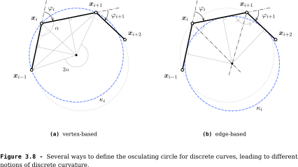
Discrete Curvature
- The edge-based curvature diverges when the curve kinks
- This is interesting for penalyzing kinked configurations
- However in our case such configurations are not likely to arise
 |
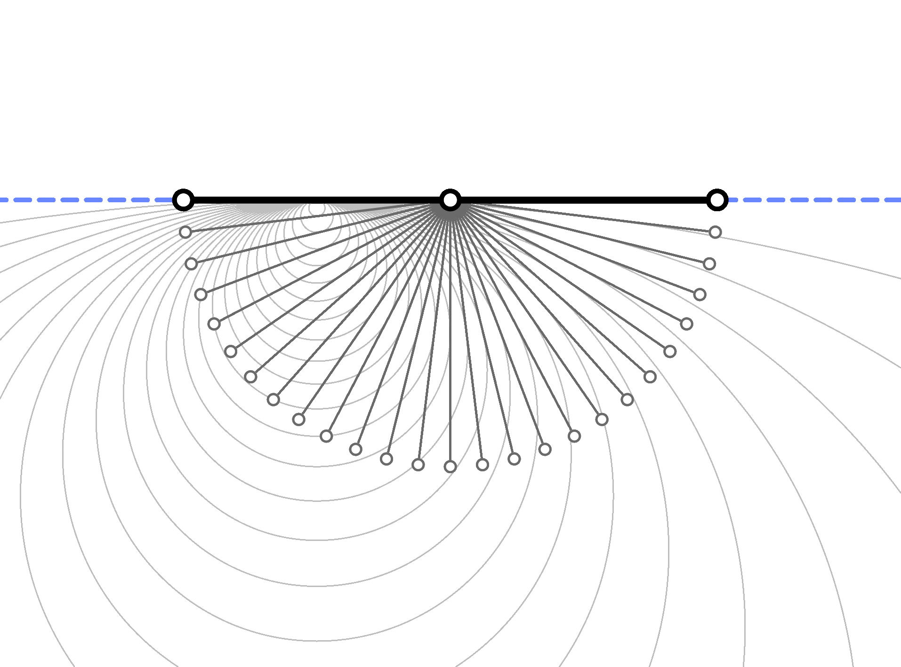 |
circumscribed osculating circle ($\kappa_1$)
|
inscribed osculating circle ($\kappa_3$)
|
 |
 |
Discrete Curvature
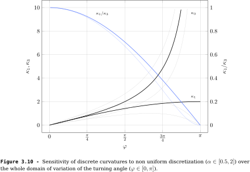
Bending Energy
The vertex-based curvature is more accurate in terms of bending energy representativity
 |
 |
| 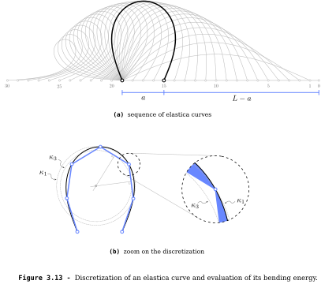 |
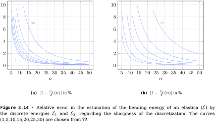 |
Discrete Tangent
Tangent Vector
- Curvature and tangent vectors are prescribe at $\mathbf{x}_i$ by the osculating circle
- Consequently, we have assumed the curvature is continuous in the vicinity of $\mathbf{x}_i$
TANGENT
- Definitions agree > Current / Left / Right
- Tangent vector > control local curvature with biarc
BIARC
- Definitions agree > Current / Left / Right
- Tangent vector > control local curvature with biarc
Discrete biarc beam element
Discrete Beam
- Discrete centerline > $\mathbf{x}_i$
- Discrete material frame > $\{\mathbf{d}_3,\mathbf{d}_1,\mathbf{d}_2\}_i$
- Segment > $\{\mathbf{x}_{2i},\mathbf{x}_{2i+1},\mathbf{x}_{2i+2}\}$
Discrete Beam
- Uniform properties > $E_i,\,G_i,\,S_i,\,I_1,\,I_2,\,J_i$
- Uniform external distributed loads > $\mathbf{f}^{ext}_i,\;\mathbf{m}^{ext}_i$
- External concentrated loads at handles > $\mathbf{F}^{ext}_{2i},\;\mathbf{M}^{ext}_{2i}$
 Internal Forces and Moments
Internal Forces and Moments
Axial Behaviour
- Axial extension > $\epsilon_i$
- Axial force > $\mathbf{N}_i$
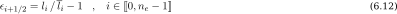

Torsional Behaviour
- Parallel transport > $\Delta \theta_i$
- Rate of twist > $\tau_i$
- Twisting moment > $\mathbf{Q}_i$
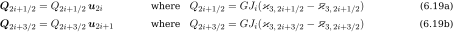
Bending Behaviour
- Geometric curvature > $\mathbf{\kappa b}_i$
- Material curvature > $\mathbf{\varkappa}_i = (1+\epsilon_i) \mathbf{\kappa b}_i$
- Bending moment > $\mathbf{M}^{\perp}_i$
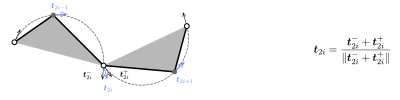

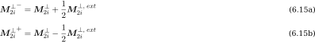
Shear Behaviour
- Shear force > $\mathbf{F}^{\perp}_i$
- Reacting parameter

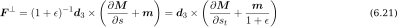
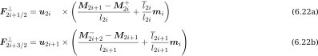
Interpolation
- Linear interpolation : mid-edge > vertex
- From the equations of motion with inertial terms neglected
- Particle-spring system
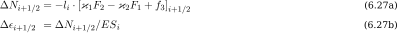
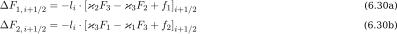
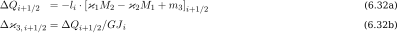
Particle-Spring System
Particle-Spring System
- The system is now modeled as a particle-spring system
- Particles are subject to relsultant forces and moments > $R_i^x\;,\;R_i^{\theta}$
- Translational and rotational lumped masses > $m_i^x\;,\;m_i^{\theta}$
- Only 4-DOFs due to the curve-angle representation

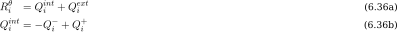
Dynamic Relaxation
- Explicit dynamic to find the quasi-static state of a structure
- Atrtificial damping > kinetic vs. viscous
- Ensure stability and optimize convergence speed with fictitious masses
[Day, 1962]
Achievement
- Dynamic beam model from Kirchhoff theory
- Only 4-DOFs
- Extension + Flexion + Torsion
- Accounts for distributed applied loads
- Discrete biarc beam model
- Only 4-DOFs
- Enriched kinematic with ghost nodes
- Accounts for concentrated & distributed loads
- Particle-Spring system > Dynamic Relaxation


 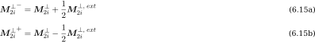
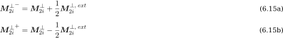